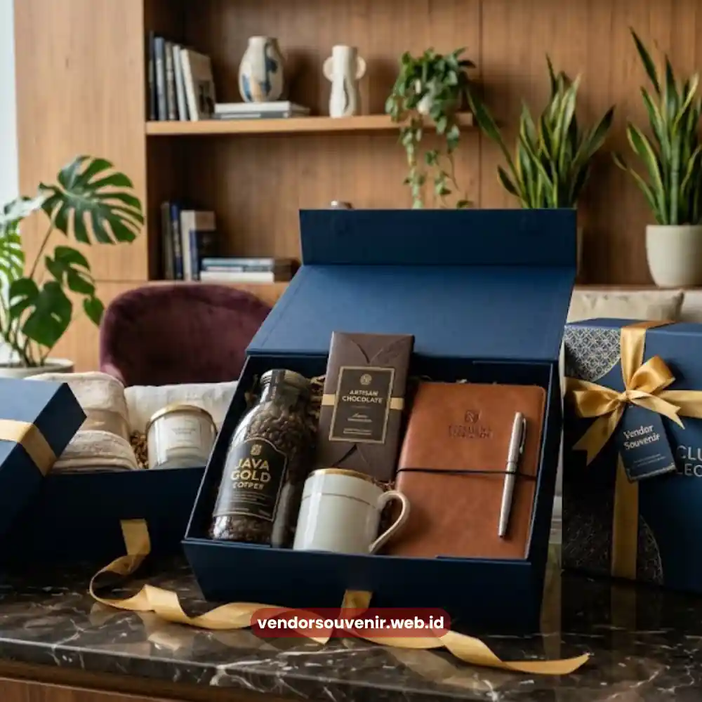
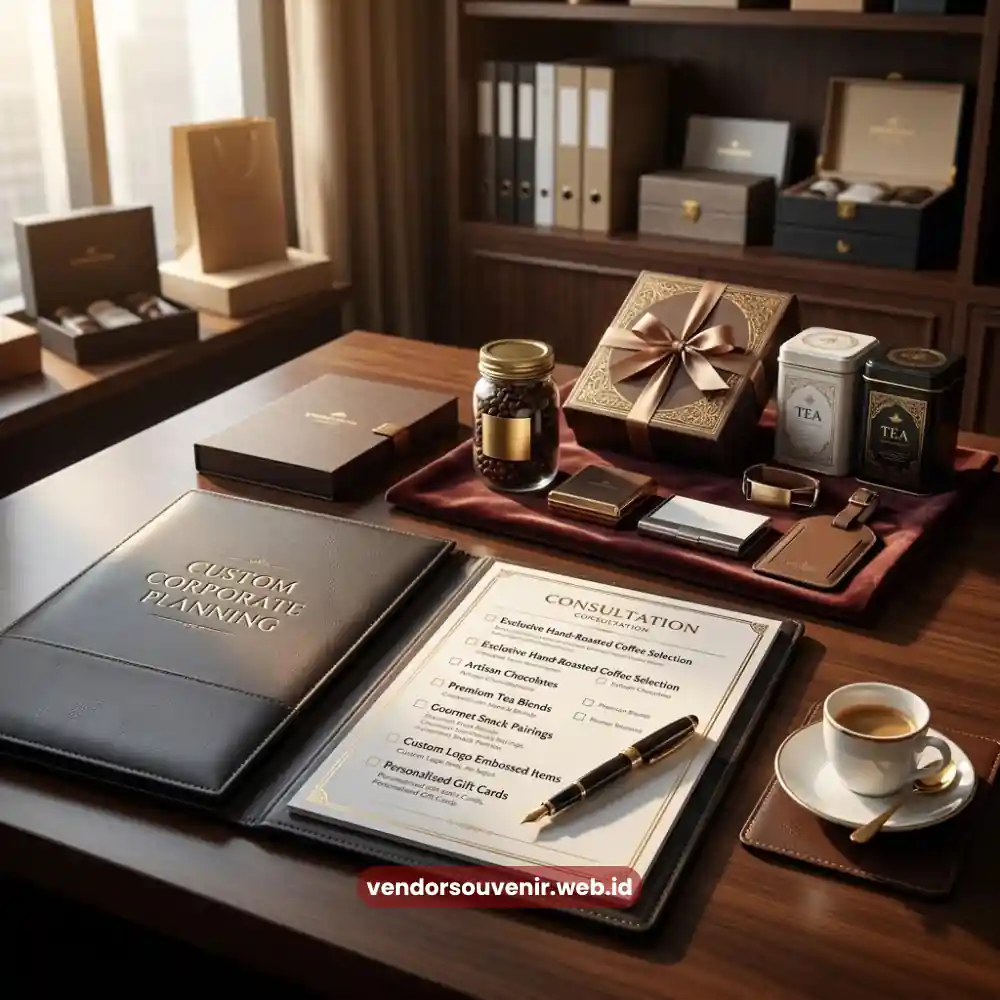

Daftar Isi
Paket hampers perusahaan custom adalah bingkisan korporat yang seluruh isinya dapat disesuaikan dengan anggaran, tema acara, dan citra brand perusahaan.
Berbeda dari hampers pasaran yang isinya sudah ditentukan, hampers custom memberi keleluasaan penuh.
Vendor Souvenir menyediakan layanan ini bagi perusahaan yang ingin memberikan kesan profesional kepada klien, mitra bisnis, maupun karyawan.
- Isi hampers dapat disesuaikan penuh sesuai anggaran dan kebutuhan acara perusahaan.
- Proses pemesanan cepat dengan konsultasi langsung bersama tim Vendor Souvenir.
- Tersedia opsi branding logo pada kemasan maupun produk di dalamnya.
- Cocok untuk hadiah klien, relasi bisnis, karyawan, maupun momen seremonial perusahaan.
- Harga menyesuaikan jumlah pesanan dan kompleksitas isi hampers.
Apa Itu Paket Hampers Perusahaan Custom?
Paket hampers perusahaan custom merupakan bingkisan korporat yang dirancang khusus mengikuti identitas dan kebutuhan perusahaan pemesan.
Konsep custom di sini mencakup dua aspek utama, yaitu kebebasan memilih isi produk dan kebebasan menentukan tampilan kemasan.
Perusahaan dapat memilih kombinasi makanan, minuman, alat tulis, hingga produk lifestyle sesuai preferensi penerima.
Model bingkisan ini populer digunakan oleh perusahaan skala kecil hingga korporasi besar karena fleksibilitasnya.
Sebuah instansi dapat memesan isi yang berbeda untuk segmen penerima yang berbeda pula tanpa mengorbankan kesan eksklusif.
Kenapa Perusahaan Perlu Memilih Hampers dengan Isi yang Bisa Disesuaikan?
Hampers dengan isi yang dapat disesuaikan memberi nilai tambah karena mencerminkan perhatian dan keseriusan perusahaan terhadap penerima hadiah.
Fleksibilitas ini penting terutama ketika perusahaan memiliki target audiens yang beragam, mulai dari klien korporat hingga tim internal.
Kontrol Anggaran yang Presisi
Penyesuaian isi memungkinkan perusahaan mengontrol anggaran secara lebih presisi sesuai dengan budget yang tersedia.
Produk yang Relevan
Produk yang relevan dengan kebutuhan penerima akan lebih dihargai dibanding hadiah generik yang umum di pasaran.
Keselarasan Tema
Hampers custom dapat menyelaraskan tema hadiah dengan momen tertentu seperti akhir tahun, hari raya, atau peluncuran produk baru.
Bagaimana Proses Pemesanan Paket Hampers Perusahaan di Vendor Souvenir?
Proses pemesanan hampers perusahaan di Vendor Souvenir dirancang sederhana agar tim internal perusahaan tidak perlu repot mengurus detail teknis.
Tahapan umum yang akan dilalui pelanggan korporat meliputi konsultasi hingga pengiriman.
Konsultasi Kebutuhan dan Anggaran
Tahap pertama adalah diskusi mengenai jumlah penerima, kisaran anggaran per paket, serta tujuan pemberian hampers.
Informasi ini menjadi dasar bagi tim Vendor Souvenir untuk menyusun beberapa opsi paket yang relevan.
Pemilihan Isi dan Desain Kemasan
Setelah kebutuhan dipetakan, perusahaan dapat memilih kombinasi produk dari katalog yang tersedia atau mengajukan permintaan khusus.
Desain kemasan turut disesuaikan, baik dari segi warna, bahan, maupun tata letak agar selaras dengan identitas visual perusahaan.
Penambahan Branding Logo
Perusahaan dapat menambahkan logo pada kotak, pita, atau kartu ucapan di dalam hampers.
Elemen branding ini memperkuat pengenalan identitas perusahaan setiap kali hampers dibuka oleh penerima.
Produksi dan Pengiriman
Setelah desain disetujui, hampers akan diproduksi sesuai jadwal yang disepakati bersama.
Vendor Souvenir turut membantu proses pengiriman ke alamat tunggal maupun distribusi ke banyak lokasi sekaligus.

Proses Pemesanan Hampers Korporat
Apa Saja Pilihan Isi yang Bisa Dikustomisasi dalam Hampers Perusahaan?
Isi hampers perusahaan pada dasarnya dapat mencakup berbagai kategori produk, tergantung tujuan pemberian dan target penerima.
Kategori yang umum dipilih meliputi produk makanan dan minuman premium, perlengkapan kerja, hingga barang bertema lokal.
Kombinasi isi juga dapat disesuaikan dengan tingkatan paket.
Misalnya paket eksekutif dengan produk lebih eksklusif untuk klien utama, dan paket reguler dengan komposisi ringkas untuk distribusi massal.
Berapa Kisaran Biaya Paket Hampers Perusahaan Custom?
Biaya paket hampers perusahaan custom dipengaruhi oleh jenis produk, jumlah pesanan, kompleksitas kemasan, dan elemen branding.
Semakin banyak jumlah pesanan, perusahaan dapat memperoleh penyesuaian harga yang lebih kompetitif per unitnya.
Untuk mendapatkan gambaran biaya akurat, cara paling efektif adalah berkonsultasi langsung dengan tim Vendor Souvenir.
Dengan begitu, perusahaan dapat memperoleh simulasi anggaran yang realistis sebelum memutuskan jumlah paket yang dipesan.
Kapan Waktu Tepat Memesan Hampers Perusahaan?
Waktu pemesanan yang ideal umumnya dilakukan jauh sebelum momen penyerahan, terutama menjelang periode ramai seperti akhir tahun.
Pemesanan awal memberi ruang luas untuk proses konsultasi, produksi, hingga quality control sebelum dikirim.
Perusahaan disarankan menjadikan hal ini anggaran terjadwal agar proses pemesanan berjalan efisien setiap periodenya.
Kesalahan Umum yang Perlu Dihindari saat Memilih Hampers Perusahaan
Beberapa kesalahan yang kerap terjadi antara lain memesan mendekati tenggat waktu sehingga pilihan produk menjadi terbatas.
Kesalahan lainnya adalah tidak mempertimbangkan relevansi isi dengan profil penerima dan mengabaikan elemen branding perusahaan.
Tidak melakukan konsultasi mendalam mengenai anggaran juga dapat membuat hasil akhir kurang sesuai ekspektasi.
Konsultasi di awal proses akan membantu meminimalkan berbagai risiko ini.

Solusi Gift Set dari Vendor Terpercaya
Kesimpulan
Paket hampers perusahaan custom memberi keleluasaan penuh bagi perusahaan untuk menyesuaikan isi, kemasan, dan elemen branding.
Fleksibilitas ini menjadikan hampers custom pilihan tepat untuk berbagai momen korporat, mulai dari apresiasi klien hingga karyawan.
Butuh Bantuan Merancang Kemasan Hampers?
Tim ahli kami siap membantu Anda menyusun paket hadiah eksklusif yang menarik.
Pilihan barang akan disesuaikan dengan ketersediaan budget dan kebutuhan Anda.
Seluruh desain kemasan akan kami selaraskan dengan identitas visual perusahaan Anda.
Dapatkan penawaran harga terbaik untuk pesanan massal!
FAQ
Apa itu paket hampers perusahaan custom?
Paket hampers perusahaan custom adalah bingkisan korporat yang isi, kemasan, dan elemen brandingnya dapat disesuaikan sepenuhnya dengan kebutuhan perusahaan pemesan.
Apakah bisa memesan hampers dengan logo perusahaan sendiri?
Bisa. Vendor Souvenir menyediakan opsi penambahan logo pada kemasan, kartu ucapan, maupun produk di dalam hampers.
Berapa minimal jumlah pemesanan hampers perusahaan?
Jumlah minimal pemesanan dapat berbeda tergantung jenis produk yang dipilih, sehingga sebaiknya dikonfirmasikan langsung melalui konsultasi dengan tim Vendor Souvenir.
Berapa lama waktu produksi hampers perusahaan custom?
Waktu produksi bervariasi tergantung kompleksitas desain dan jumlah pesanan, sehingga disarankan melakukan pemesanan jauh sebelum tanggal penyerahan.
Apakah Vendor Souvenir melayani pengiriman ke banyak alamat sekaligus?
Ya, Vendor Souvenir dapat membantu distribusi hampers ke satu alamat maupun banyak lokasi sekaligus sesuai kebutuhan korporat.
Maroon Souvenir
Partner Corporate Gift terpercaya di Indonesia. Berpengalaman melayani ratusan perusahaan sejak 2018.
Lihat Portofolio Kami